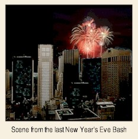

Dixon's New Year's Bash is back for the 22nd year of fun and excitement.
The festivities start on December 31 at noon with the FrostiRun 5K and 10K races. Sign
up now or the morning of the race. Family fun is available at the Kid's Korner with
booths and free activities for the whole family; including performances from Dixon's
own Chester the Jester. The fun continues with A Taste of Dixon as vendors provide
samples from Dixon's best eateries and for the artistically inclined, plan to attend
the Winter Art Fair on Dixon's downtown square.
Music from Lester's Blues Band and The Jazz Express brings us into the New Year.
The dancing starts at 7 p.m. and continues until midnight. From ten to 11 p.m. we say goodbye
to the old year (and ring in the new) with the famous New Year's Bash fireworks spectacular.
Be sure to arrive early for all of the festivities and the final countdown.
New Year's Bash ·
340 Main Street, Dixon OK 74381 ·
555 - 3481